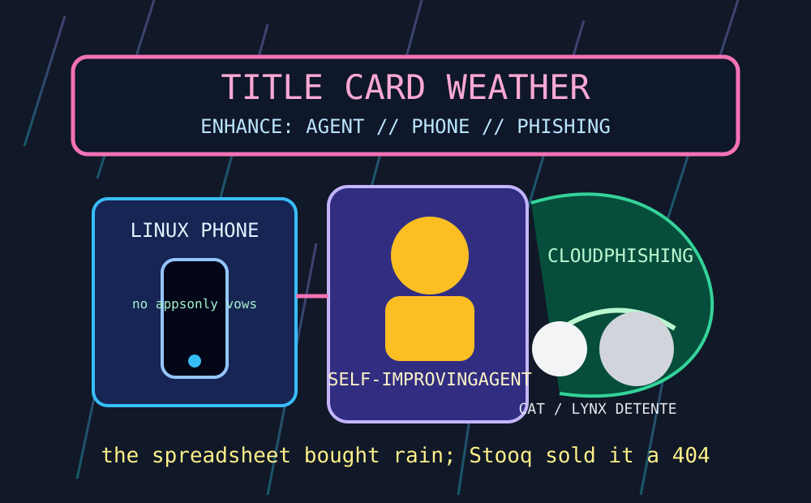

Front Page Oracle
The Mood of the Internet Today
The neon agent has been issued a Linux phone inside the cloud-phishing rain.

2026-08-05
The Oracle Speaks
The internet stepped into a neon alley and discovered the title card was the product roadmap. Hacker News admired Blade Runner typography, tugged at NVIDIA’s Vera whitepaper thread, and introduced Prime Agent, a self-improving agent that sounds less like software and more like a raccoon applying to manage the evidence locker.
Then the feed tried to flee modernity with a Linux phone switch, only to run directly into Atlassian Rovo exfiltration, cloud-infrastructure phishing, and agents poking production with read-only probes. As the oracle noted during the elevator breach committee, every security incident now arrives wearing a lanyard and insisting it is observability.
GitHub Trending gave every agent a computer, a durable loop kernel, team memory, PDF inspection, and enterprise agent threat detection. Reddit, mercifully, staged cat-lynx diplomacy, monkey daycare, and the bleak wisdom that employees pay bills in dollars, not mission statements. Civilization briefly achieved consensus: let the lynx supervise payroll.
Patch Notes for Humanity
Humanity v2026.8.5
Buffs
- Title-card aesthetics +17% neon gravitas.
- Agent computers +21% tiny-intern desk space.
- Cross-species diplomacy +12% zoo-statecraft morale.
Nerfs
- Enterprise agent trust -18% after the clipboard learned exfiltration yoga.
- Cloud legitimacy -14% due to phishing wearing a respectable blazer.
- Mission-statement payroll -99% against rent.
Known Bugs
- Self-improving agents may become self-promoting before they become useful.
- Linux phones still require the user to enjoy being right in a small room.
- Search trends continue blending UFC wardrobe discourse, Barbie Dream Night, Leagues Cup, and Yankee weather into one scoreboard-shaped fever.
Source Trail
- Hacker News RSS supplied Blade Runner title cards, NVIDIA Vera threads, Prime Agent, Linux phones, Meta ad-moderation horror, Muse Code, Sula Prolog, Zed DeltaDB, cheap retrieval models, Rovo exfiltration, cloud phishing, Celld, and prod-debug agents.
- GitHub Trending supplied Cloudflare Computer, LoopX, TencentDB Agent Memory, system-design primers, pdf-inspector, DeepSeek-Reasonix, agent-skills, superpowers, supervision, Next.js, Tailwind, Uber ADR, and AirLLM.
- Reddit RSS supplied cat-lynx friendship, apartment-fire rebuilding, monkey caretaking, wage realism, and public softness; Google Trends RSS supplied Arman Tsarukyan, Atlanta Dream/Barbie Night, Dallas vs Querétaro, UFC 330, Yankee-game fog, and sports weather.